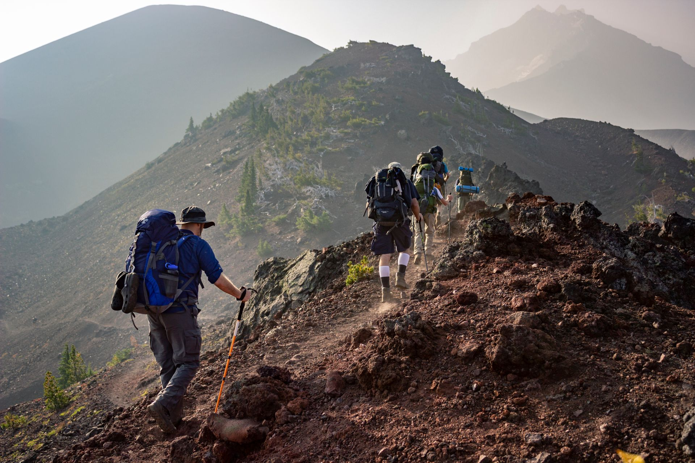
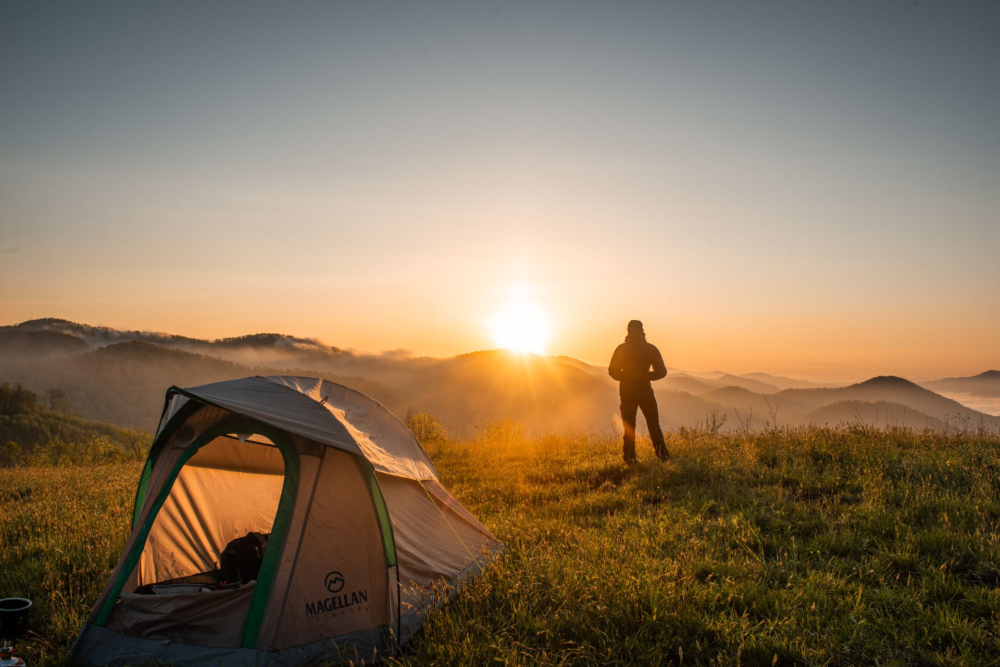
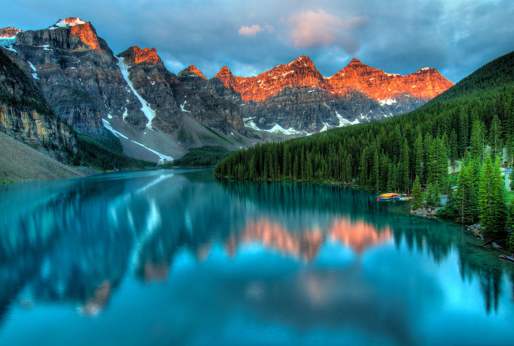
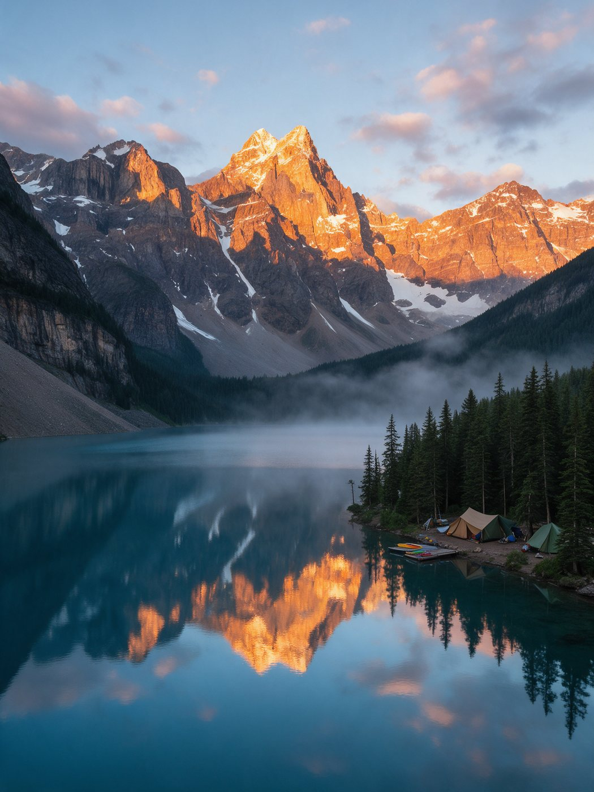
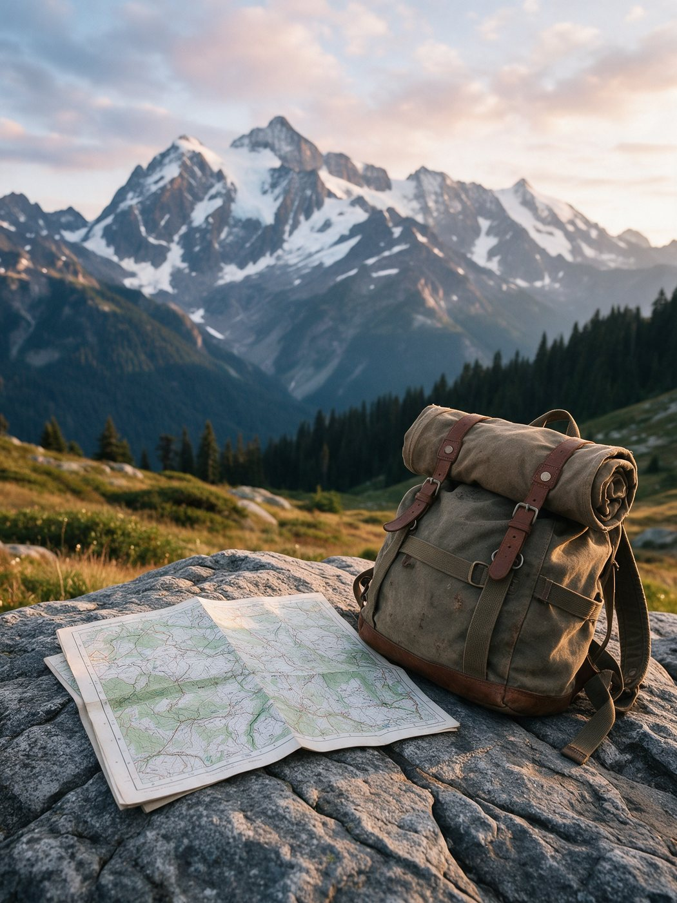

Stop 01
Trailhead
Pack checks happen here, in the dark, before the first switchback. If a strap is wrong at 1,240 m it is wrong at 4,000.

Field systems · Kaçkar range
Layers, packs and route kit for people who keep climbing after the trees stop.
Stop 01
Pack checks happen here, in the dark, before the first switchback. If a strap is wrong at 1,240 m it is wrong at 4,000.

Stop 02
Sunrise on the tent line. Layers come off, the stove comes out, and the route is read again in daylight.

Stop 03
Glacial water, cold wind off the ridge. This is where a shell proves itself — or does not.

Stop 04
First light on the last pitch. Nothing in the pack is there for comfort — everything is there because it worked on the way up.

Route card + pack, Stop 01
Pack list · what goes in, in order
| Band | Item | Reason |
|---|---|---|
| 1,240 m | Trail pack, 38 L | Hip belt carries the load; shoulders steer it. |
| 2,380 m | Mid layer, grid fleece | Vents under the shell while you climb. |
| 3,150 m | Three-layer shell | Taped seams, hood that clears a helmet. |
| 4,310 m | Route card, paper | Batteries fail first. Paper does not. |
Plan a route
Atlas is a fictional outfitter created as a design demonstration by İzden Creative · info@izdencreative.com